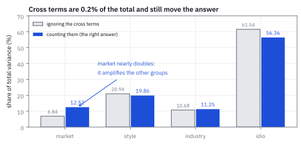
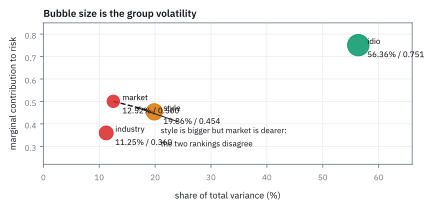
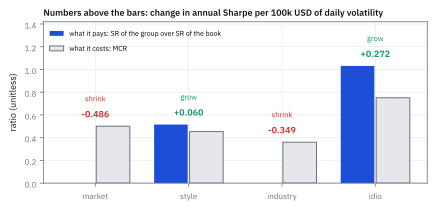
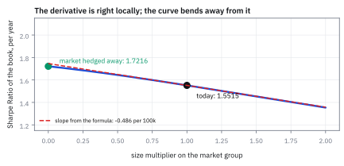

26.4 Decomposing Risk: Percentage of Variance, MCR, and Sharpe Sensitivity
สามวิธีแบ่งความเสี่ยง ที่ตอบคนละคำถาม และจัดอันดับไม่เหมือนกัน
พอร์ตหนึ่งมีความเสี่ยงรายวัน \$159,844 แบ่งเป็นสี่กลุ่ม กลุ่ม style มีความผันผวน \$70,000 ส่วน market มีแค่ \$40,000 กลุ่มไหนควรลดก่อน?
เฉลย: market ทั้งที่ตัวมันเล็กกว่าเกือบครึ่ง เพราะสิ่งที่วัดความแพงคือ marginal contribution to risk (MCR) ซึ่งดูว่ากลุ่มนั้นเดินไปทางเดียวกับพอร์ตแค่ไหน ไม่ใช่ขนาดของตัวมันเอง market มีความสัมพันธ์กับ PnL รวม 0.50 ขณะที่ style มี 0.45 และที่สำคัญกว่านั้น market ไม่จ่ายผลตอบแทนเลย การลดความผันผวนของ market ลง \$100,000 ต่อวัน ยก Sharpe Ratio ทั้งกองขึ้น 0.486 ต่อปี
ศัพท์ที่ใช้ในหัวข้อนี้
- risk decomposition
- การแบ่งความเสี่ยงของพอร์ตออกเป็นส่วน ๆ ตามกลุ่มของ factor หรือหุ้น ใช้เป็นรายงานหลักที่ risk manager อ่านทุกเช้า
- factor group
- การจัดกลุ่ม factor ที่มีความหมายร่วมกัน เช่นรวม style ทุกตัวเป็นกลุ่มเดียว ใช้ย่อรายงานร้อยบรรทัดให้เหลือสี่บรรทัด
- percentage of variance
- สัดส่วนของ variance ทั้งหมดที่กลุ่มหนึ่งรับผิดชอบ นับรวมครึ่งหนึ่งของ covariance กับกลุ่มอื่น ใช้เป็นตัวเลขที่บวกกันได้ 100
- marginal contribution to risk (MCR)
- ความผันผวนของพอร์ตจะเปลี่ยนเท่าไรเมื่อเพิ่มความผันผวนของกลุ่มนั้นหนึ่งหน่วย ใช้ตอบว่าควรลดกลุ่มไหนก่อน
- beta
- ความชันของ PnL ของกลุ่มเทียบกับ PnL รวม ใช้เป็นอีกชื่อของ percentage of variance
- correlation
- ความสัมพันธ์เชิงเส้นที่ปรับสเกลแล้วให้อยู่ระหว่าง −1 ถึง 1 ใช้เป็นอีกชื่อของ MCR
- covariance term
- พจน์ไขว้ระหว่างสองกลุ่มใน variance รวม ใช้เป็นสาเหตุที่สัดส่วนแบบไร้เดียงสาผิด
- unpriced factor
- factor ที่รับความเสี่ยงแล้วไม่ได้ผลตอบแทนตอบแทน ใช้เรียกของที่ควรกำจัดให้หมด
- Sharpe sensitivity
- Sharpe Ratio ทั้งกองจะเปลี่ยนเท่าไรเมื่อขยายความผันผวนของกลุ่มหนึ่ง ใช้เป็นเกณฑ์ตัดสินว่าจะโตหรือจะหด
- Profit and Loss (PnL)
- กำไรขาดทุนเป็นจำนวนเงิน ใช้เป็นตัวแปรที่ทุกตัวเลขในหัวข้อนี้คำนวณบน
- Sharpe Ratio
- ผลตอบแทนคาดหวังต่อหนึ่งหน่วยความผันผวน ใช้เป็นเป้าหมายที่ทุกการตัดสินใจในหัวข้อนี้พยายามยก
- hedging
- การเพิ่มสถานะที่สวนทางเพื่อลดความเสี่ยงที่ไม่ต้องการ ใช้เป็นวิธีจัดการกลุ่มที่ควรหด ซึ่งเป็นเนื้อหาของหัวข้อ 31.4
- dollar volatility
- ความผันผวนวัดเป็นจำนวนเงินแทนที่จะเป็นเปอร์เซ็นต์ ใช้เป็นหน่วยของทุกตัวเลขในหัวข้อนี้
สัญลักษณ์ที่ใช้ในหัวข้อนี้
| สัญลักษณ์ | ความหมาย | หน่วย |
|---|---|---|
| $\mathcal S(i)$ | กลุ่มที่ i ของ factor | เซตของดัชนี |
| $v_i$ | ความผันผวนของ PnL ที่กลุ่ม i สร้างขึ้น | USD ต่อวัน |
| $v_{\text{tot}}$ | ความผันผวนของ PnL ทั้งพอร์ต | USD ต่อวัน |
| $\tilde\Omega_{i,j}$ | covariance ระหว่าง PnL ของกลุ่ม i กับกลุ่ม j | USD² ต่อวัน |
| $p_i$ | สัดส่วนของ variance ที่กลุ่ม i รับผิดชอบ | unitless |
| $m_i$ | marginal contribution to risk ของกลุ่ม i | unitless |
| $\text{SR}_i$ | Sharpe Ratio (SR) ของ PnL ที่กลุ่ม i สร้าง | ต่อปี |
| $\text{SR}_{\text{tot}}$ | Sharpe Ratio ของทั้งพอร์ต | ต่อปี |
| $x_i$ | ตัวคูณขนาดของกลุ่ม i เท่ากับ 1 ในปัจจุบัน | unitless |
| $\mathbf e$ | vector ที่ทุกตัวเป็นหนึ่ง | unitless |
ที่มาที่ไป: ตัวเลขเดียวไม่พอ
หัวข้อ 26.1 ให้ความเสี่ยงรวมของพอร์ตเป็นตัวเลขเดียว ซึ่งตอบคำถามว่า “วันนี้เราเสี่ยงแค่ไหน” แต่ไม่ตอบคำถามที่สำคัญกว่า คือ “ถ้าต้องลด จะลดตรงไหน”
คำถามหลังนี้มีสามคำตอบที่ใช้กันจริง และเขียนไว้ในรายงานเดียวกันบ่อย ๆ โดยที่คนอ่านไม่รู้ว่าทั้งสามตอบคนละคำถาม สัดส่วนของ variance ตอบว่าใครใหญ่ MCR ตอบว่าใครแพงเวลาเพิ่มอีกนิด และ Sharpe sensitivity ตอบว่าควรโตหรือหด
ในตัวอย่างของหัวข้อนี้ สองอันแรกจัดอันดับ market กับ style สลับกัน และอันที่สามให้คำตอบที่ทั้งสองอันแรกไม่มีทางให้ได้ เพราะมันเป็นอันเดียวที่ดูผลตอบแทนด้วย
โจทย์: พอร์ตหนึ่ง สี่กลุ่มความเสี่ยง
โจทย์ให้อะไรมาบ้าง พอร์ตหนึ่งแบ่งความเสี่ยงเป็นสี่กลุ่ม market style industry และ idiosyncratic ความผันผวนของ PnL ที่แต่ละกลุ่มสร้างต่อวันคือ \$40,000 \$70,000 \$50,000 และ \$120,000
ความสัมพันธ์ระหว่าง PnL ของกลุ่มคือ market กับ style +0.25 market กับ industry +0.45 style กับ industry −0.15 ส่วน idiosyncratic ไม่สัมพันธ์กับใครเลย และ Sharpe Ratio ต่อปีของ PnL แต่ละกลุ่มคือ market 0.0 style 0.8 industry 0.0 และ idiosyncratic 1.6
ต้องหาห้าอย่าง ความผันผวนรวม สัดส่วนของ variance ที่แต่ละกลุ่มรับผิดชอบ MCR ของแต่ละกลุ่ม Sharpe Ratio ของทั้งพอร์ต และกลุ่มไหนควรโตกลุ่มไหนควรหด
ขั้นที่ 1 — covariance matrix ของ PnL รายกลุ่ม และความเสี่ยงรวม
นี่คือนิยามของตารางที่ทุกอย่างในหัวข้อนี้อ่านจาก แต่ละช่องคือ covariance ระหว่าง PnL ของสองกลุ่ม ซึ่งได้จากการบีบ covariance matrix ของ factor ด้วย exposure ของแต่ละกลุ่ม ความเสี่ยงรวมคือผลรวมของทุกช่อง ไม่ใช่แค่แนวทแยง
พจน์ไขว้รวมกันแล้วได้แค่ \$50.2 ล้าน เทียบกับแนวทแยง \$25,500 ล้าน คือ 0.2% ซึ่งดูเหมือนไม่สำคัญเลย แต่ขั้นที่ 2 จะแสดงว่ามันเปลี่ยนคำตอบอย่างมีนัย เพราะมันกระจายตัวไม่เท่ากันระหว่างกลุ่ม
ตรวจเองใน 10 วินาที ถ้าทุกกลุ่มไม่สัมพันธ์กันเลย ความผันผวนรวมจะเป็น $\sqrt{40^2+70^2+50^2+120^2}$ พันดอลลาร์ ซึ่งเท่ากับ \$159,687 ค่าจริงที่ \$159,844 สูงกว่าเล็กน้อย เพราะพจน์ไขว้สุทธิเป็นบวก
ขั้นที่ 2 — สัดส่วนของ variance: ใครใหญ่
วิธีแบ่งที่ทำให้ตัวเลขบวกกันได้ 100 พอดี คือให้แต่ละกลุ่มรับ variance ของตัวเองเต็ม ๆ บวกครึ่งหนึ่งของทุกพจน์ไขว้ที่มันเกี่ยวข้อง ซึ่งเท่ากับผลรวมทั้งแถวของมัน หารด้วย variance รวม
บรรทัดที่สองของสูตรบอกว่า $p_i$ คือ beta ของ PnL กลุ่มนั้นเทียบกับ PnL รวม ซึ่งเป็นการตีความที่ทำให้มันมีความหมายจริง ไม่ใช่แค่ตัวเลขที่บวกกันได้หนึ่ง
ดูตัวเลขของ market มันมีความผันผวนแค่ 25% ของกลุ่มที่ใหญ่ที่สุด แต่รับ variance ไป 12.52% ซึ่งเกือบสองเท่าของ 6.84% ที่ควรจะเป็นถ้าไม่มีพจน์ไขว้ เหตุผลคือ market สัมพันธ์บวกกับทั้ง style และ industry มันจึงขยายความเสี่ยงของกลุ่มอื่นด้วย
ขณะที่ idiosyncratic ได้ลดจาก 61.54% เหลือ 56.36% เพราะมันไม่สัมพันธ์กับใครเลย พจน์ไขว้ของกลุ่มอื่นจึงไปเพิ่มส่วนแบ่งให้กลุ่มอื่น
Figure 26.4a — นับพจน์ไขว้กับไม่นับ ให้คำตอบต่างกันเกือบสองเท่า

แท่งจางคือสัดส่วนแบบไร้เดียงสา ที่คิดจากความผันผวนของแต่ละกลุ่มยกกำลังสองอย่างเดียว แท่งเข้มคือสัดส่วนจริงที่นับพจน์ไขว้ด้วย market โตขึ้นจาก 6.84% เป็น 12.52% เพราะมันไปขยายความเสี่ยงของกลุ่มอื่น ส่วน idiosyncratic ลดลงเพราะมันไม่ไปยุ่งกับใคร
ขั้นที่ 3 — MCR: ใครแพงเวลาเพิ่มอีกนิด
คำถามคนละข้อ ถ้าเพิ่มความผันผวนของกลุ่มหนึ่งอีกหนึ่งดอลลาร์ ความผันผวนของพอร์ตจะเพิ่มกี่ดอลลาร์ ดูว่าความผันผวนรวมขยับเร็วแค่ไหนเมื่อขยายขนาดของกลุ่มนั้นทีละนิด
ตรงนี้คือจุดที่สองวิธีจัดอันดับสลับกัน วัดด้วยสัดส่วนของ variance style ใหญ่กว่า market ชัดเจน 19.86% ต่อ 12.52% แต่วัดด้วย MCR market แพงกว่า 0.5005 ต่อ 0.4536
ทั้งสองถูกและตอบคนละคำถาม style ใหญ่กว่าเพราะตัวมันเองใหญ่กว่า แต่ market แพงกว่าต่อหนึ่งดอลลาร์ที่เพิ่ม เพราะมันเดินไปทางเดียวกับพอร์ตมากกว่า
MCR เท่ากับ correlation พอดี ซึ่งทำให้อ่านง่ายมาก ค่าอยู่ระหว่าง −1 ถึง 1 เสมอ และตีความได้ทันที ถ้ากลุ่มไหนมี MCR เป็นลบ แปลว่ามันช่วยลดความเสี่ยงของพอร์ต การเพิ่มมันเข้าไปทำให้พอร์ตนิ่งขึ้น
ตรวจเองใน 10 วินาที idiosyncratic ไม่สัมพันธ์กับกลุ่มอื่นเลย MCR ของมันจึงต้องเท่ากับ $v_{\text{idio}}/v_{\text{tot}}$ พอดี 120,000 หาร 159,844 ได้ 0.7507 ✓
Figure 26.4b — สองมาตรวัด จัดอันดับสองกลุ่มสลับกัน

แกนนอนคือสัดส่วนของ variance แกนตั้งคือ MCR แต่ละจุดคือหนึ่งกลุ่ม ขนาดของจุดคือความผันผวนของกลุ่มนั้น เส้นเชื่อม market กับ style แสดงว่าอันดับสลับกัน style อยู่ขวากว่าแต่ต่ำกว่า สองมาตรวัดนี้ไม่เรียงเหมือนกันเมื่อขนาดของกลุ่มต่างกันมาก
แล้วเอาไปใช้ทำอะไรได้จริงบ้าง
สองมาตรวัดที่ผ่านมาบอกว่าความเสี่ยงอยู่ที่ไหน แต่ยังไม่บอกว่าควรทำอะไร เพราะมันไม่รู้จักผลตอบแทน กลุ่มที่แพงที่สุดอาจเป็นกลุ่มที่ทำเงินมากที่สุดก็ได้
บนโต๊ะจริง คำถามคือ ถ้าจะลดความเสี่ยงลงหนึ่งหน่วย ลดตรงไหนแล้ว Sharpe Ratio ขึ้นมากที่สุด และถ้าจะเพิ่ม เพิ่มตรงไหน คำตอบต้องชั่งทั้งความแพงกับผลตอบแทนที่ได้ ซึ่งเป็นสูตรถัดไป
ขั้นที่ 4 — Sharpe sensitivity: ควรโตหรือควรหด
ดูว่า Sharpe Ratio ทั้งกองขยับเร็วแค่ไหนเมื่อขยายขนาดของกลุ่มทีละนิด ใช้กฎของผลหาร ตัวเศษเพิ่มด้วยอัตรา $\text{SR}_i$ ต่อหนึ่งหน่วยความผันผวนที่เพิ่ม ส่วนตัวส่วนเพิ่มด้วยอัตรา $m_i$ ซึ่งคือนิยามของ MCR
บรรทัดสุดท้ายคือกฎที่ใช้ได้ทันที กลุ่มหนึ่งคุ้มที่จะโตก็ต่อเมื่อ Sharpe Ratio ของมันเทียบกับของทั้งกอง มากกว่า ค่าที่มันแพง ไม่ใช่แค่ว่ามันมี Sharpe Ratio เป็นบวก
นั่นเป็นเกณฑ์ที่เข้มกว่าที่คนส่วนใหญ่ใช้มาก กลุ่มที่มี Sharpe Ratio 0.5 อยู่ในกองที่มี Sharpe Ratio 1.55 และมี MCR 0.75 จะทำให้ Sharpe Ratio รวมแย่ลง ทั้งที่ตัวมันเองทำเงินได้
ขั้นที่ 5 — ตอบโจทย์: กลุ่มไหนโต กลุ่มไหนหด
หา Sharpe Ratio ของทั้งกองก่อน จากผลตอบแทนคาดหวังรวมหารความผันผวนรวม แล้วเทียบสองข้างของกฎในขั้นที่ 4 ทีละกลุ่ม ผลตอบแทนคาดหวังรายวันของแต่ละกลุ่มคือ Sharpe Ratio ต่อปีหารด้วยรากที่สองของ 251 คูณความผันผวนรายวัน
คำตอบชัดเจน market กับ industry ควรหดเพราะไม่จ่ายอะไรเลยแต่แพง ส่วน style กับ idiosyncratic ควรโต
แปลงเป็นตัวเลขที่ใช้ตัดสินใจได้ คูณด้วย $\text{SR}_{\text{tot}}/v_{\text{tot}}$ แล้วปรับหน่วยเป็นต่อ \$100,000 ของความผันผวนรายวัน ได้ market −0.486 industry −0.349 style +0.060 idio +0.272
ตัวเลข −0.486 สำหรับ market คือสิ่งที่ควรเอาไปคุยกับหัวหน้าโต๊ะ มันแปลว่าถ้ากำจัดความผันผวนจาก market ออกได้ \$100,000 ต่อวัน Sharpe Ratio ทั้งกองขึ้นจาก 1.55 เป็นราว 2.04 ซึ่งเป็นเหตุผลทั้งหมดว่าทำไมการ hedge factor ที่ไม่จ่ายผลตอบแทนถึงเป็นงานที่คุ้มค่าที่สุดงานหนึ่ง และเป็นเนื้อหาของหัวข้อ 31.4
Figure 26.4c — กลุ่มไหนจ่ายคุ้มที่มันแพง

แท่งเข้มคือ Sharpe Ratio ของกลุ่มเทียบกับของทั้งกอง แท่งจางคือ MCR ซึ่งคือราคาที่ต้องจ่าย กลุ่มที่แท่งเข้มสูงกว่าแท่งจางควรโต market กับ industry มีแท่งเข้มเป็นศูนย์ จึงควรหดจนหมด ตัวเลขข้างบนคือผลต่อ Sharpe Ratio ต่อปี ต่อความผันผวน \$100,000 ต่อวันที่เพิ่ม
Figure 26.4d — ลด market ลงเรื่อย ๆ แล้ว Sharpe Ratio ไปถึงไหน

แกนนอนคือตัวคูณขนาดของกลุ่ม market จาก 0 คือกำจัดหมด ถึง 2 คือสองเท่าของปัจจุบัน แกนตั้งคือ Sharpe Ratio ต่อปีของทั้งกอง จุดที่ตัวคูณเท่ากับ 1 คือสถานะปัจจุบันที่ 1.5515 ความชันที่จุดนั้นคือ −0.486 ต่อ \$100,000 ซึ่งตรงกับสูตรในขั้นที่ 4
กับดัก: บวก variance รายกลุ่มโดยลืมพจน์ไขว้ และเลิกกลุ่มที่ทำเงินเพราะมันแพง
กับดักแรกคือคิดสัดส่วนความเสี่ยงจากความผันผวนรายกลุ่มยกกำลังสองอย่างเดียว ตัวเลขที่ได้ดูเหมือนถูกเพราะมันบวกกันได้ 100 เหมือนกัน แต่ในตัวอย่างนี้มันบอกว่า market รับความเสี่ยงไป 6.84% ขณะที่ความจริงคือ 12.52% ซึ่งเกือบสองเท่า ความผิดพลาดนี้จะใหญ่ขึ้นเรื่อย ๆ เมื่อกลุ่มสัมพันธ์กันมากขึ้น ซึ่งเกิดขึ้นเสมอในช่วงวิกฤต
กับดักที่สองคือใช้ MCR ตัดสินใจตรง ๆ MCR บอกว่าอะไรแพง ไม่ได้บอกว่าอะไรไม่คุ้ม ในตัวอย่างนี้ idiosyncratic มี MCR สูงที่สุดที่ 0.7507 ถ้าดูแค่นั้นจะสรุปว่าควรลดมันก่อน ซึ่งเป็นการตัดสินใจที่แย่ที่สุดที่ทำได้ เพราะมันคือกลุ่มเดียวที่ทำเงินได้ดีที่สุด กฎในขั้นที่ 4 บอกว่าควรโตมันด้วยซ้ำ
กับดักที่สามคือลืมว่าตัวเลขเหล่านี้เป็นความชัน ณ จุดปัจจุบัน คือใช้ได้กับการขยับเล็ก ๆ เท่านั้น รูปสุดท้ายแสดงว่า Sharpe Ratio ไม่ได้เป็นเส้นตรง การลด market จาก 1.0 เหลือ 0.5 ให้ผลไม่เท่ากับครึ่งหนึ่งของการลดจาก 1.0 เหลือ 0 ต้องคำนวณใหม่หลังทุกการเปลี่ยนแปลงใหญ่
ข้อจำกัด: สามมาตรวัด ใช้ตอนไหน
| มาตรวัด | ตอบคำถามว่า | สูตร | ข้อควรระวัง |
|---|---|---|---|
| สัดส่วนของ variance | กลุ่มไหนใหญ่ที่สุด | ผลรวมทั้งแถวหารด้วย variance รวม เท่ากับ beta | บวกกันได้ 100 แต่ไม่บอกว่าเพิ่มอีกนิดจะแพงแค่ไหน |
| MCR | เพิ่มอีกหนึ่งหน่วยแล้วแพงแค่ไหน | เท่ากับ correlation กับ PnL รวม | ไม่รู้จักผลตอบแทนเลย จัดอันดับไม่เหมือนสัดส่วนของ variance |
| Sharpe sensitivity | ควรโตหรือควรหด | เทียบ Sharpe Ratio สัมพัทธ์กับ MCR | เป็นความชัน ใช้ได้กับการขยับเล็ก และต้องมีประมาณการผลตอบแทนซึ่งคลาดเคลื่อนมาก |
| ทั้งสามรวมกัน | ภาพเต็มของความเสี่ยง | รายงานทั้งสามคู่กันเสมอ | ทั้งสามเปลี่ยนเมื่อหมุนแบบจำลอง ตามที่หัวข้อ 26.3 แสดง |
แถวสุดท้ายคือข้อจำกัดที่ครอบทุกอย่างในหัวข้อนี้ การแบ่งเป็นกลุ่มขึ้นกับรูปแบบที่เลือกเขียนแบบจำลอง ถ้าเปลี่ยนรูปแบบ ตัวเลขทั้งสามชุดเปลี่ยนตาม ส่วนความเสี่ยงรวมและ Sharpe Ratio รวมไม่เปลี่ยน
ตรวจทุกตัวเลขของหัวข้อนี้
import numpy as np
names = ['market', 'style', 'industry', 'idio']
v = np.array([40_000.0, 70_000.0, 50_000.0, 120_000.0])
C = np.array([[1, .25, .45, 0], [.25, 1, -.15, 0], [.45, -.15, 1, 0], [0, 0, 0, 1]])
Om = np.outer(v, v) * C
# step 1: total risk, and how much the cross terms matter
vtot = np.sqrt(Om.sum())
assert abs(vtot - 159_844) < 1
assert abs(np.sqrt((v ** 2).sum()) - 159_687) < 1 # if nothing were correlated
cross = Om.sum() - (v ** 2).sum()
assert abs(cross / 1e6 - 50.2) < 0.1 # 50.2 million, only 0.2% of the total
# step 2: percentage of variance
p = Om.sum(axis=1) / vtot ** 2
assert abs(p.sum() - 1.0) < 1e-15 # it really does add to 100
assert np.allclose(p * 100, [12.52, 19.86, 11.25, 56.36], atol=5e-3)
naive = v ** 2 / (v ** 2).sum()
assert np.allclose(naive * 100, [6.84, 20.94, 10.68, 61.54], atol=5e-3)
assert p[0] / naive[0] > 1.8 # market nearly doubles
rng = np.random.default_rng(9) # p is a beta: check by simulation
L = np.linalg.cholesky(C)
pnl = (L @ rng.standard_normal((4, 400_000))) * v[:, None]
tot = pnl.sum(axis=0)
beta = np.array([np.cov(pnl[i], tot)[0, 1] / tot.var() for i in range(4)])
assert np.allclose(beta, p, atol=6e-3)
# step 3: MCR is the correlation with total PnL
m = Om.sum(axis=1) / (v * vtot)
assert np.allclose(m, [0.5005, 0.4536, 0.3597, 0.7507], atol=5e-4)
assert np.allclose(m, vtot / v * p)
rho = np.array([np.corrcoef(pnl[i], tot)[0, 1] for i in range(4)])
assert np.allclose(rho, m, atol=6e-3) # it really is a correlation
assert abs(m[3] - v[3] / vtot) < 1e-12 # idio is uncorrelated, so m = v/vtot
assert p[1] > p[0] and m[1] < m[0] # the two metrics rank them opposite ways
# step 4-5: which group to grow
sr = np.array([0.0, 0.8, 0.0, 1.6])
d = np.sqrt(251)
e_day = (sr / d * v).sum()
assert abs(e_day - 15_654) < 1
srtot = e_day / vtot * d
assert abs(srtot - 1.5515) < 1e-4
sens = srtot / vtot * (sr / srtot - m)
assert np.allclose(sens * 1e5, [-0.4858, 0.0602, -0.3492, 0.2723], atol=5e-4)
assert sens[0] < 0 and sens[2] < 0 and sens[1] > 0 and sens[3] > 0
assert m[3] > m[0] and sens[3] > 0 > sens[0] # highest MCR, yet the one to grow
def sharpe(scale): # rebuild the book from scratch
vs = v * np.array(scale)
return (sr / d * vs).sum() / np.sqrt((np.outer(vs, vs) * C).sum()) * d
assert abs(sharpe([1, 1, 1, 1]) - srtot) < 1e-12
assert abs(sharpe([0, 1, 1, 1]) - 2.0430) < 1e-4 # kill market entirely
num = (sharpe([1 + 1e-6, 1, 1, 1]) - sharpe([1 - 1e-6, 1, 1, 1])) / (2e-6 * v[0])
assert abs(num - sens[0]) < 1e-9 # the formula matches the slopeสองบล็อกกลางไม่ได้เชื่อสูตร แต่สุ่ม PnL 400,000 วันจาก correlation ที่โจทย์ให้ แล้ววัด beta กับ correlation จริง ได้ตรงกับ $p_i$ และ $m_i$ ทุกตัว ส่วนบรรทัดสุดท้ายวัดความชันด้วยผลต่างเชิงตัวเลข แล้วยืนยันว่าสูตรความชันในขั้นที่ 4 ถูกต้อง
ก่อนไปต่อ
ทุกอย่างในหัวข้อนี้สมมติว่าเรามี factor return อยู่แล้ว แต่ในชีวิตจริงต้องประมาณมันจากข้อมูล และมักต้องทำทีละขั้น คือใส่ factor กลุ่มหนึ่งก่อน แล้วค่อยใส่อีกกลุ่ม หัวข้อถัดไปคือทฤษฎีบทที่บอกว่าการทำแบบนั้นให้ผลเหมือนกับทำทีเดียวหรือไม่ และคำตอบมีเงื่อนไขที่คมมาก
สรุปที่ใช้ได้จริง
- variance รวมคือผลรวมของทุกช่องใน covariance matrix ของ PnL รายกลุ่ม ไม่ใช่แค่แนวทแยง ในตัวอย่างนี้พจน์ไขว้เป็นแค่ 0.2% ของยอดรวม แต่ย้ายส่วนแบ่งของ market จาก 6.84% เป็น 12.52%
- สัดส่วนของ variance คือผลรวมทั้งแถวหารด้วย variance รวม มันเท่ากับ beta ของ PnL กลุ่มนั้นเทียบกับ PnL รวม และบวกกันได้ 100 พอดี
- MCR คือ correlation ระหว่าง PnL ของกลุ่มกับ PnL รวม มันตอบว่าเพิ่มอีกหนึ่งหน่วยแพงแค่ไหน และจัดอันดับไม่เหมือนสัดส่วนของ variance ในตัวอย่างนี้ style ใหญ่กว่า market แต่ market แพงกว่า
- กลุ่มหนึ่งควรโตก็ต่อเมื่อ Sharpe Ratio ของมันเทียบกับของทั้งกอง มากกว่า MCR ของมัน ซึ่งเข้มกว่าเกณฑ์ว่า Sharpe Ratio เป็นบวกมาก
- ในตัวอย่างนี้ market กับ industry ควรหดจนหมดเพราะไม่จ่ายอะไรเลย การกำจัดความผันผวนจาก market \$100,000 ต่อวัน ยก Sharpe Ratio ทั้งกองจาก 1.55 ไปราว 2.04